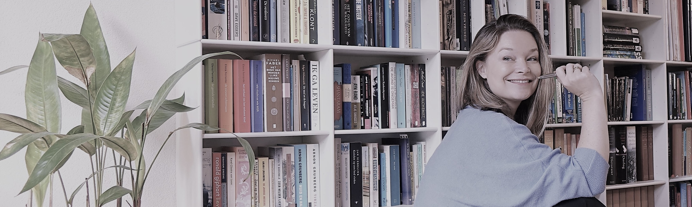

|

Jorien Wallast
Communicatie componist
|
Een boodschap de wereld in slingeren is niet zo moeilijk. Maar zorgen dat je ook gehóórd wordt, is een heel ander verhaal. Een overtuigende boodschap samenstellen lijkt best wel op het componeren van een muziekstuk. Als alle instrumenten samenkomen tot één geheel, kan het je publiek echt raken. Maar valt er eentje uit de toon, dan is de luisteraar ook zo weer afgehaakt.
Als communicatie componist maak ik van jouw verhaal een klinkende boodschap. Ik ben beschikbaar als voice-over, tekstschrijver en presentator van jouw media- of communicatiecampagne. Ik werk snel en secuur, vanuit mijn eigen studio of op locatie. Mijn stem, jouw geluid. Nieuwsgierig geworden? Neem contact met me op voor de mogelijkheden. |
 |
|
| portfolio en opdrachtgevers <> (foto en audio) | |||
| testimonials | |||
| korte tekst tarieven en knop naar contactform | |||
| onderaan de pagina : contact, kvk, meer knoppen |